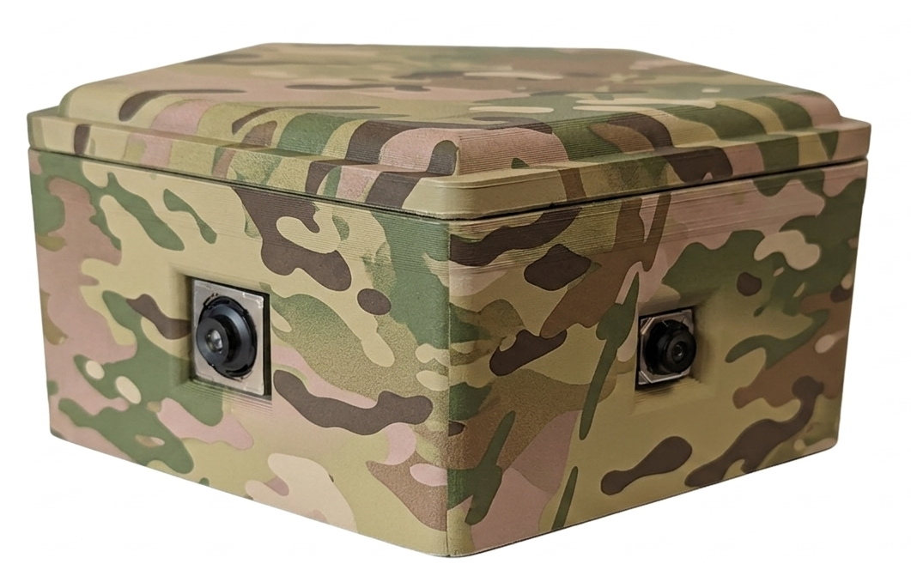
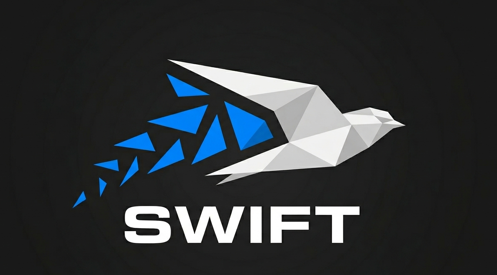

Capability 02
Sensing.
You can't act on what you can't see.
The locations that matter most are usually the hardest to watch: no mains power, no reliable network, and no one able to get there often. We build sensing you can deploy in numbers, leave in place for long periods, and rely on to keep reporting when the conditions are against it.
The problem
Coverage stops where the infrastructure does.
Conventional sensing assumes power, connectivity and access. Remove any one of those and the options collapse to periodic manual inspection, which means you learn about events long after they happened.
The result is a picture built from the places that were convenient to instrument, rather than the places that carry the risk.
-
01
No power, no network
Remote sites, austere environments and contested areas rule out anything needing mains supply or steady bandwidth.
-
02
Cost per point
When each sensor is expensive, you can only afford a handful, so coverage stays thin and gaps stay unmonitored.
-
03
Raw feeds, no meaning
More telemetry is not more insight. Without interpretation at the edge, you have added noise, not awareness.
-
04
Fragile links
Degrade the comms and most systems simply stop reporting, exactly when the information matters most.
What we do
Small, cheap, patient, and built for the actual environment.
We design sensing around the constraint that defines the problem, whether that is power budget, deployment cost, comms availability or physical access. Each configuration is built for its job rather than adapted from a generic product.
Design to the constraint
Low SWaP by default. If the site has no power and no network, that is the starting specification, not an exception to handle later.
Deploy in numbers
Low unit cost means real coverage. You instrument the places that carry risk, not just the ones that were easy to reach.
Interpret at the edge
Detection and classification happen on the device, so what crosses the link is meaning rather than raw data you cannot afford to send.
Keep reporting
SWIFT keeps data moving through degraded and denied networks, so a lost link delays the picture instead of ending it.
Platforms & services
What we bring to sensing.
Fielded monitoring systems, bespoke sensor configurations, and the resilient links that keep them reporting.
Health & Usage Monitoring
FABHUMS
A world-first, fully integrated Health and Usage Monitoring System for deployable bridging. Real-time structural health across mixed fleets.
→ Enhancing safety, extending asset life
Learn more
Low-SWaP Sensing
Sensing & vision
Small, low-cost sensors you can deploy in numbers and leave in place. Vehicle detection, wildlife and animal detection, and custom events of significance.
→ Fielded · TRL 5
Learn more
Resilient Communications
SWIFT
Keeps data and voice flowing when comms are degraded or denied. Wraps every stage of the sensing chain rather than sitting at one end of it.
→ TRL 4 · presented at ADSTAR 26
Learn moreGot somewhere you can't watch?
Tell us about the site and the constraint. We'll tell you what's feasible to field.